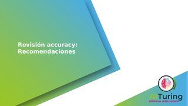

Inteligencia Artificial - documentación central
Inteligencia Artificial - Documentación central
Entrega John Ruiz
Inteligencia Artificial - documentación central : Entrega numeral 5 Accuracy.ppt
Created by
Daniel Tobon
on Sep 15, 2021

Attachments:
Recomendaciones_accuracy.pptx
(application/vnd.openxmlformats-officedocument.presentationml.presentation)